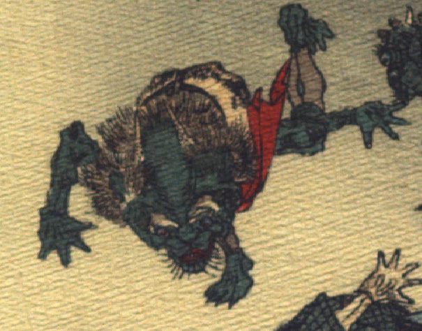

緑色の肌の鬼。額から後ろ向きに長い角を2本生やし、眉毛と後頭部にごわごわした毛が生えている。目玉は丸くて青く、鼻からあご先が狭まり、獣のような口を開いている。あごに薄くひげが生えている。腰に毛皮を巻き、その上から赤い褌を締めている。宙に舞い上がり、腕脚を広げて、頭から飛び降りている。
出典：親書誌：U426_nichibunken_0109：Le moineau qui a la langue coupée／日付：2006／資源識別子：U426_nichibunken_0109_0008_0001
Copyright (c)2010- International Research Center for Japanese Studies, Kyoto, Japan. All rights reserved.